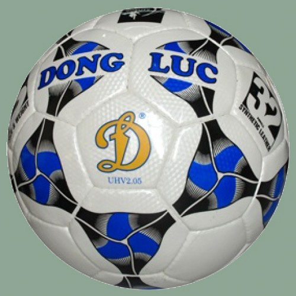

TRANG CHỦ
THƯƠNG HIỆU
KHUYẾN MẠI
SẢN PHẨM MỚI

Bóng động lực
Thông tin sản phẩm
- Bóng đá là môn thể thao được ưa chuộng nhất trên thế giới. Để chơi tốt môn thể thao này thì ngoài yêu cầu về chiến thuật, khả năng chơi,… thì một phần rất quan trọng đó là làm sao chọn cho mình quả bóng tốt nhất vì nó góp một phần không nhỏ trong kết quả thi đấu. Bóng đá chuyên nghiệp UHV 1.02D số 5 được sản xuất theo dây chuyền tiên tiến cùng chất liệu đạt tiêu chuẩn quốc tế sẽ là sản phẩm phù hợp nhất dành cho bạn.
- Quả bóng đá UHV 2.03 Động Lực in sao số 5 được làm từ chất liệu da PU Hàn Quốc bền đẹp. Quả bóng Động Lực dùng trong tập luyện và thi đấu trên mọi mặt sân.
- Bóng đá UHV 2.03 Động Lực được làm bằng chất liệu da PU có độ mềm vừa phải, có độ bền cao.
- Các miếng da được khâu lại chắc chắn với nhau, đảm bảo độ bền và khả năng chịu lực tốt.
- Bóng có độ nảy và bám tốt, logo Động lực nổi bật.